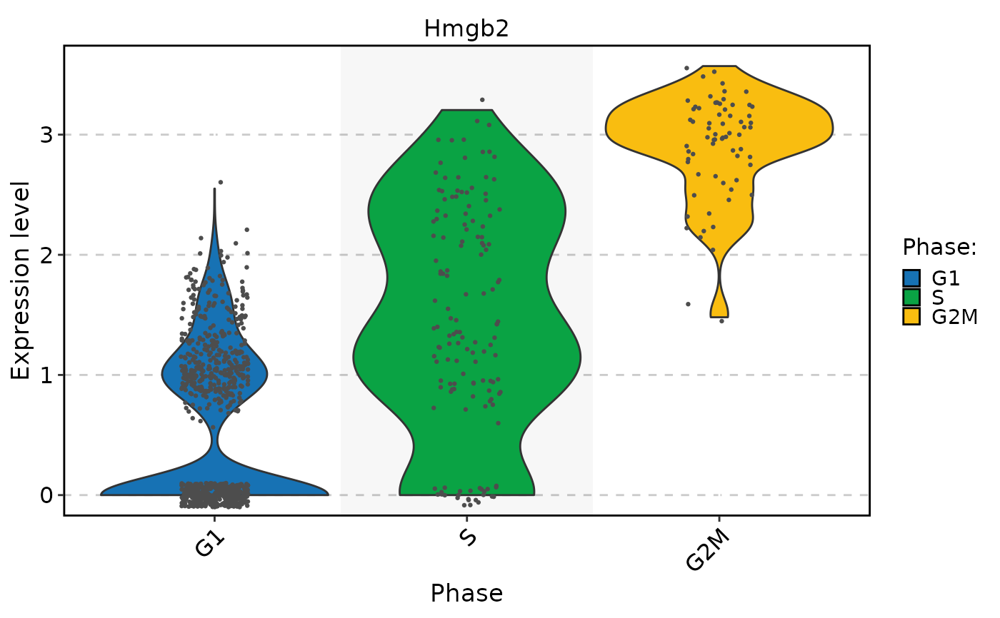

Find Expressed Markers
Usage
FindExpressedMarkers(
object,
ident.1 = NULL,
ident.2 = NULL,
cells.1 = NULL,
cells.2 = NULL,
features = NULL,
assay = NULL,
layer = "data",
min.expression = 0,
test.use = "wilcox",
logfc.threshold = 0.25,
base = 2,
pseudocount.use = 1,
mean.fxn = NULL,
fc.name = NULL,
min.pct = 0.1,
min.diff.pct = -Inf,
max.cells.per.ident = Inf,
latent.vars = NULL,
only.pos = FALSE,
min.cells.group = 3,
min.cells.feature = 3,
norm.method = "LogNormalize",
seed = 11,
verbose = TRUE,
...
)Arguments
- object
An object
- ident.1
Identity class to define markers for; pass an object of class
phyloor 'clustertree' to find markers for a node in a cluster tree; passing 'clustertree' requiresBuildClusterTreeto have been run- ident.2
A second identity class for comparison; if
NULL, use all other cells for comparison; if an object of classphyloor 'clustertree' is passed toident.1, must pass a node to find markers for- cells.1
Vector of cell names belonging to group 1
- cells.2
Vector of cell names belonging to group 2
- features
Genes to test. Default is to use all genes
- assay
Assay to use in differential expression testing
- layer
The layer used.
- min.expression
The min.expression used.
- test.use
Denotes which test to use. Available options are:
"wilcox" : Identifies differentially expressed genes between two groups of cells using a Wilcoxon Rank Sum test (default); will use a fast implementation by Presto if installed
"wilcox_limma" : Identifies differentially expressed genes between two groups of cells using the limma implementation of the Wilcoxon Rank Sum test; set this option to reproduce results from Seurat v4
"bimod" : Likelihood-ratio test for single cell gene expression, (McDavid et al., Bioinformatics, 2013)
"roc" : Identifies 'markers' of gene expression using ROC analysis. For each gene, evaluates (using AUC) a classifier built on that gene alone, to classify between two groups of cells. An AUC value of 1 means that expression values for this gene alone can perfectly classify the two groupings (i.e. Each of the cells in cells.1 exhibit a higher level than each of the cells in cells.2). An AUC value of 0 also means there is perfect classification, but in the other direction. A value of 0.5 implies that the gene has no predictive power to classify the two groups. Returns a 'predictive power' (abs(AUC-0.5) * 2) ranked matrix of putative differentially expressed genes.
"t" : Identify differentially expressed genes between two groups of cells using the Student's t-test.
"negbinom" : Identifies differentially expressed genes between two groups of cells using a negative binomial generalized linear model. Use only for UMI-based datasets
"poisson" : Identifies differentially expressed genes between two groups of cells using a poisson generalized linear model. Use only for UMI-based datasets
"LR" : Uses a logistic regression framework to determine differentially expressed genes. Constructs a logistic regression model predicting group membership based on each feature individually and compares this to a null model with a likelihood ratio test.
"MAST" : Identifies differentially expressed genes between two groups of cells using a hurdle model tailored to scRNA-seq data. Utilizes the MAST package to run the DE testing.
"DESeq2" : Identifies differentially expressed genes between two groups of cells based on a model using DESeq2 which uses a negative binomial distribution (Love et al, Genome Biology, 2014).This test does not support pre-filtering of genes based on average difference (or percent detection rate) between cell groups. However, genes may be pre-filtered based on their minimum detection rate (min.pct) across both cell groups. To use this method, please install DESeq2, using the instructions at https://bioconductor.org/packages/release/bioc/html/DESeq2.html
- logfc.threshold
Limit testing to genes which show, on average, at least X-fold difference (log-scale) between the two groups of cells. Default is 0.1 Increasing logfc.threshold speeds up the function, but can miss weaker signals. If the
slotparameter is "scale.data" no filtering is performed.- base
The base with respect to which logarithms are computed.
- pseudocount.use
Pseudocount to add to averaged expression values when calculating logFC. 1 by default.
- mean.fxn
Function to use for fold change or average difference calculation. The default depends on the the value of
fc.slot:"counts" : difference in the log of the mean counts, with pseudocount.
"data" : difference in the log of the average exponentiated data, with pseudocount. This adjusts for differences in sequencing depth between cells, and assumes that "data" has been log-normalized.
"scale.data" : difference in the means of scale.data.
- fc.name
Name of the fold change, average difference, or custom function column in the output data.frame. If NULL, the fold change column will be named according to the logarithm base (eg, "avg_log2FC"), or if using the scale.data slot "avg_diff".
- min.pct
only test genes that are detected in a minimum fraction of min.pct cells in either of the two populations. Meant to speed up the function by not testing genes that are very infrequently expressed. Default is 0.01
- min.diff.pct
only test genes that show a minimum difference in the fraction of detection between the two groups. Set to -Inf by default
- max.cells.per.ident
Down sample each identity class to a max number. Default is no downsampling. Not activated by default (set to Inf)
- latent.vars
Variables to test, used only when
test.useis one of 'LR', 'negbinom', 'poisson', or 'MAST'- only.pos
Only return positive markers (FALSE by default)
- min.cells.group
Minimum number of cells in one of the groups
- min.cells.feature
Minimum number of cells expressing the feature in at least one of the two groups, currently only used for poisson and negative binomial tests
- norm.method
Normalization method for fold change calculation when
slotis “data”- seed
The seed used.
- verbose
Print a progress bar once expression testing begins
- ...
Arguments passed to other methods and to specific DE methods
Examples
data(pancreas_sub)
pancreas_sub <- standard_scop(pancreas_sub)
#> StandardPC_ 1
#> Positive: Aplp1, Cpe, Gnas, Fam183b, Map1b, Hmgn3, Pcsk1n, Chga, Tuba1a, Bex2
#> Syt13, Isl1, 1700086L19Rik, Pax6, Chgb, Scgn, Rbp4, Scg3, Gch1, Camk2n1
#> Cryba2, Pcsk2, Pyy, Tspan7, Mafb, Hist3h2ba, Dbpht2, Abcc8, Rap1b, Slc38a5
#> Negative: Spp1, Anxa2, Sparc, Dbi, 1700011H14Rik, Wfdc2, Gsta3, Adamts1, Clu, Mgst1
#> Bicc1, Ldha, Vim, Cldn3, Cyr61, Rps2, Mt1, Ptn, Phgdh, Nudt19
#> Smtnl2, Smco4, Habp2, Mt2, Col18a1, Rpl12, Galk1, Cldn10, Acot1, Ccnd1
#> StandardPC_ 2
#> Positive: Rbp4, Tagln2, Tuba1b, Fkbp2, Pyy, Pcsk2, Iapp, Tmem27, Meis2, Tubb4b
#> Pcsk1n, Dbpht2, Rap1b, Dynll1, Tubb2a, Sdf2l1, Scgn, 1700086L19Rik, Scg2, Abcc8
#> Atp1b1, Hspa5, Fam183b, Papss2, Slc38a5, Scg3, Mageh1, Tspan7, Ppp1r1a, Ociad2
#> Negative: Neurog3, Btbd17, Gadd45a, Ppp1r14a, Neurod2, Sox4, Smarcd2, Mdk, Pax4, Btg2
#> Sult2b1, Hes6, Grasp, Igfbpl1, Gpx2, Cbfa2t3, Foxa3, Shf, Mfng, Tmsb4x
#> Amotl2, Gdpd1, Cdc14b, Epb42, Rcor2, Cotl1, Upk3bl, Rbfox3, Cldn6, Cer1
#> StandardPC_ 3
#> Positive: Nusap1, Top2a, Birc5, Aurkb, Cdca8, Pbk, Mki67, Tpx2, Plk1, Ccnb1
#> 2810417H13Rik, Incenp, Cenpf, Ccna2, Prc1, Racgap1, Cdk1, Aurka, Cdca3, Hmmr
#> Spc24, Kif23, Sgol1, Cenpe, Cdc20, Hist1h1b, Cdca2, Mxd3, Kif22, Ska1
#> Negative: Anxa5, Pdzk1ip1, Acot1, Tpm1, Anxa2, Dcdc2a, Capg, Sparc, Ttr, Pamr1
#> Clu, Cxcl12, Ndrg2, Hnf1aos1, Gas6, Gsta3, Krt18, Ces1d, Atp1b1, Muc1
#> Hhex, Acadm, Spp1, Enpp2, Bcl2l14, Sat1, Smtnl2, 1700011H14Rik, Tgm2, Fam159a
#> StandardPC_ 4
#> Positive: Glud1, Tm4sf4, Akr1c19, Cldn4, Runx1t1, Fev, Pou3f4, Gm43861, Pgrmc1, Arx
#> Cd200, Lrpprc, Hmgn3, Ppp1r14c, Pam, Etv1, Tsc22d1, Slc25a5, Akap17b, Pgf
#> Fam43a, Emb, Jun, Krt8, Dnajc12, Mid1ip1, Ids, Rgs17, Uchl1, Alcam
#> Negative: Ins2, Ins1, Ppp1r1a, Nnat, Calr, Sytl4, Sdf2l1, Iapp, Pdia6, Mapt
#> G6pc2, C2cd4b, Npy, Gng12, P2ry1, Ero1lb, Adra2a, Papss2, Arhgap36, Fam151a
#> Dlk1, Creld2, Gip, Tmem215, Gm27033, Cntfr, Prss53, C2cd4a, Lyve1, Ociad2
#> StandardPC_ 5
#> Positive: Pdx1, Nkx6-1, Npepl1, Cldn4, Cryba2, Fev, Jun, Chgb, Gng12, Adra2a
#> Mnx1, Sytl4, Pdk3, Gm27033, Nnat, Chga, Ins2, 1110012L19Rik, Enho, Krt7
#> Mlxipl, Tmsb10, Flrt1, Pax4, Tubb3, Prrg2, Gars, Frzb, BC023829, Gm2694
#> Negative: Irx2, Irx1, Gcg, Ctxn2, Tmem27, Ctsz, Tmsb15l, Nap1l5, Pou6f2, Gria2
#> Ghrl, Peg10, Smarca1, Arx, Lrpap1, Rgs4, Ttr, Gast, Tmsb15b2, Serpina1b
#> Slc16a10, Wnk3, Ly6e, Auts2, Sct, Arg1, Dusp10, Sphkap, Dock11, Edn3
markers <- FindExpressedMarkers(
pancreas_sub,
cells.1 = SeuratObject::WhichCells(
pancreas_sub,
expression = Phase == "G2M"
)
)
#> ⠙ [2026-01-07 09:01:31] Running [1/6145] Processing: 1 ETA: 17s
#> ⠹ [2026-01-07 09:01:31] Running [4126/6145] Processing: 4126 ETA: 1s
#> ✔ [2026-01-07 09:01:31] Completed 6145 tasks in 3.3s
#>
head(markers)
#> p_val avg_log2FC pct.1 pct.2 p_val_adj
#> Hmgb2 1.964385e-37 2.1638592 1.000 0.526 3.142624e-33
#> Tuba1b 3.652521e-33 1.8756996 0.986 0.801 5.843303e-29
#> Ran 2.573020e-31 1.2068807 1.000 0.946 4.116317e-27
#> H2afx 9.845758e-31 1.4231361 0.971 0.519 1.575124e-26
#> Ptma 3.541885e-30 0.9021115 1.000 0.999 5.666307e-26
#> Tubb5 1.550857e-29 1.4861586 1.000 0.940 2.481062e-25
FeatureStatPlot(
pancreas_sub,
rownames(markers)[1],
group.by = "Phase",
add_point = TRUE
)
#> Warning: No shared levels found between `names(values)` of the manual scale and the
#> data's colour values.
